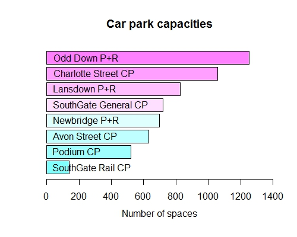
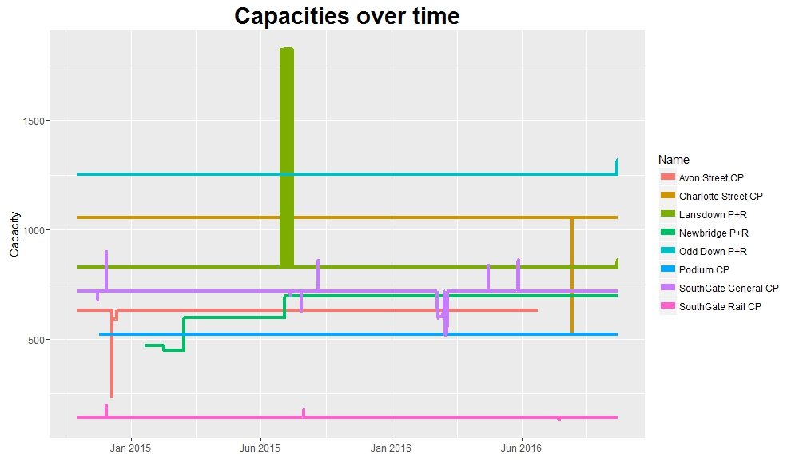
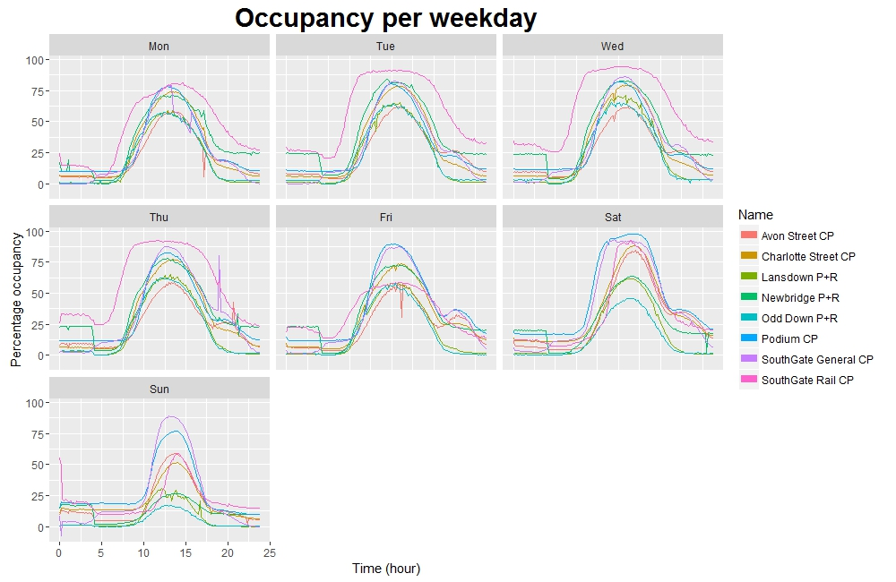

Project overview
I am currently involved with a very exciting machine learning project being run within the Bath Machine Learning Meetup group (I’m sure I’ll write a future post with more details on this project, but it is currently at a very early stage!). In collaboration with Bath: Hacked we are using this set of open data, which contains information about the occupancy of car parks in the Bath & North East Somerset (B&NES) area from the last two years or so.
While looking for something to listen to whilst making my daily bus commute to and from the university, I recently discovered the marvellous Partially Derivative podcast. In one of the early episodes (S1E2, to be precise) one topic of conversation particularly caught my attention: Paul Downey’s blog post “One CSV, thirty stories”. The concept is simple: take a single dataset, and produce a different visualization of the data each day for 30 days.
Seeing as we will be working with the car parking dataset a great deal in coming months, and inspired by Downey’s post, I thought I would try something similar. So, without further ado…
Day 00 (11/11/16): Sneak preview
I thought it would be a good idea to have a quick look at the dataset before starting out. I will, of course, be using R (to start with at least!).
I downloaded the dataset as a CSV file from the Bath: Hacked datastore (the link is above) - the file on the website is updated continuously with live data from sensors in the car parks. The version I downloaded (at 22:11 on 11/11/16) weighs in at a hefty 316MB, and contains a very large number of records:
length(count.fields("data/BANES_Historic_Car_Park_Occupancy.csv"))## [1] 1528228To avoid converting my Pentium-core laptop into a puddle of molten plastic, for now I’ll only try to deal with about 10% of these records. Looking at the dataset’s documentation we see that “scripts are set up to query the B&NES car park database every 5 minutes, the data is then pushed to the Bath: Hacked data store to… append to a historical set”. Therefore it shouldn’t be a problem to read in only the first 150000 rows of the CSV file, since these rows should contain an equal spread of data from each of the distinct car parks.
Let’s have a quick first look at our data! Note: a few records are empty in certain fields (future investigation may be necessary…) - I’ll fill these fields with NAs for now to make it more obvious when data is missing.
D <- read.csv("data/BANES_Historic_Car_Park_Occupancy.csv", nrow = 150000,
na.strings = c("NA", ""))str(D)## 'data.frame': 150000 obs. of 12 variables:
## $ ID : Factor w/ 150000 levels "000016ca6149d3f3bed350cf3b37f854",..: 51364 64067 64678 65738 69335 113228 134317 134563 4865 17729 ...
## $ LastUpdate : Factor w/ 88741 levels "01/01/2015 01:00:01 AM",..: 28126 28128 28131 28126 28124 28130 28128 28134 28346 28354 ...
## $ Name : Factor w/ 8 levels "Avon Street CP",..: 7 1 3 8 6 4 2 5 8 5 ...
## $ Description : Factor w/ 8 levels "Avon Street CP / A367 Green Park Road / Corn Street / CP / Bath",..: 7 1 3 8 6 4 2 5 8 5 ...
## $ Capacity : int 720 630 827 140 521 698 1056 1252 140 1252 ...
## $ Status : Factor w/ 3 levels "Emptying","Filling",..: 3 2 3 3 3 3 2 3 3 3 ...
## $ Occupancy : int 28 32 8 15 75 21 124 0 15 0 ...
## $ Percentage : int 3 5 1 10 14 3 12 0 10 0 ...
## $ Easting : int 375115 374884 373183 375083 375109 371853 374445 373363 375083 373363 ...
## $ Northing : int 164421 164469 168104 164424 165083 165766 165097 161610 164424 161610 ...
## $ DateUploaded: Factor w/ 23983 levels "01/01/2015 01:00:01 AM",..: 7636 7636 7636 7636 7636 7636 7636 7636 7675 7675 ...
## $ Location : Factor w/ 8 levels "(51.352935229, -2.38389427175)",..: 2 4 8 3 5 7 6 1 3 1 ...head(D)## ID LastUpdate
## 1 577ffcf1cf17544c6030eef4ba85663e 13/02/2016 02:08:46 AM
## 2 6d383b77bce3b7c87153ccf141158140 13/02/2016 02:09:36 AM
## 3 6e415c9bf6c8231a189d11896ed42b04 13/02/2016 02:09:48 AM
## 4 70151449ba6bcd7d28ee000b3042c7f9 13/02/2016 02:08:46 AM
## 5 762bc1f6aafc736dabc1e4a6d006598e 13/02/2016 02:06:14 AM
## 6 c0ffd83d29df5bb8bb5ee83c8122de28 13/02/2016 02:09:47 AM
## Name
## 1 SouthGate General CP
## 2 Avon Street CP
## 3 Lansdown P+R
## 4 SouthGate Rail CP
## 5 Podium CP
## 6 Newbridge P+R
## Description
## 1 SouthGate General CP / A367 St James Parade / Dorchester Street / CP / Bath
## 2 Avon Street CP / A367 Green Park Road / Corn Street / CP / Bath
## 3 Lansdown P+R / Lansdown Road / P+R / Lansdown
## 4 SouthGate Rail CP / A367 St James Parade / Dorchester Street / CP / Bath
## 5 Podium CP / Walcot Street / CP / Bath
## 6 Newbridge P+R / A4 Newbridge Road / P+R / Bath
## Capacity Status Occupancy Percentage Easting Northing
## 1 720 Static 28 3 375115 164421
## 2 630 Filling 32 5 374884 164469
## 3 827 Static 8 1 373183 168104
## 4 140 Static 15 10 375083 164424
## 5 521 Static 75 14 375109 165083
## 6 698 Static 21 3 371853 165766
## DateUploaded Location
## 1 13/02/2016 02:10:01 AM (51.3782901111, -2.35893376096)
## 2 13/02/2016 02:10:01 AM (51.3787114813, -2.36225609279)
## 3 13/02/2016 02:10:01 AM (51.4113171399, -2.38697144144)
## 4 13/02/2016 02:10:01 AM (51.3783156754, -2.35939373665)
## 5 13/02/2016 02:10:01 AM (51.3842422001, -2.35906657317)
## 6 13/02/2016 02:10:01 AM (51.3902305335, -2.40590782211)Looking interesting… but I won’t look too closely for now. The fun starts tomorrow!
Day 01 (12/11/16): Car parks? What car parks?
A logical first step would be to work out where all the information we have is coming from!
A week or two ago I attended a learning night run by Bath: Hacked, which was an introduction to using the mapping tool Carto (formerly CartoDB) for visualizing geographic data. And notice that we have some location information…
# D is our 150000-row dataframe of records
# Reduce D to a new dataframe, which consists only of the first row to contain
# each car park name
carpark_df <- D[!duplicated(D$Name), ]
# The Location column contains character vectors of latitude and longitude in
# the form "(lat, lng)": let's separate these values and make them numeric
locations <- strsplit(sapply(carpark_df$Location, gsub,
pattern = "\\(|\\)", replacement = ""),
", ")
lat <- as.numeric(sapply(locations, "[[", 1))
lng <- as.numeric(sapply(locations, "[[", 2))
# Now construct a dataframe for Carto with the info we're interested in
carto_df <- cbind(carpark_df[, c("Name", "Description", "Capacity")],
"Longitude" = lng, "Latitude" = lat)
# Let's have a look:
carto_df## Name
## 1 SouthGate General CP
## 2 Avon Street CP
## 3 Lansdown P+R
## 4 SouthGate Rail CP
## 5 Podium CP
## 6 Newbridge P+R
## 7 Charlotte Street CP
## 8 Odd Down P+R
## Description
## 1 SouthGate General CP / A367 St James Parade / Dorchester Street / CP / Bath
## 2 Avon Street CP / A367 Green Park Road / Corn Street / CP / Bath
## 3 Lansdown P+R / Lansdown Road / P+R / Lansdown
## 4 SouthGate Rail CP / A367 St James Parade / Dorchester Street / CP / Bath
## 5 Podium CP / Walcot Street / CP / Bath
## 6 Newbridge P+R / A4 Newbridge Road / P+R / Bath
## 7 Charlotte Street CP / A4 Charlotte Street / Marlbourgh Buildings / CP / Bath
## 8 Odd Down P+R / A367 / P+R / Bath
## Capacity Longitude Latitude
## 1 720 -2.358934 51.37829
## 2 630 -2.362256 51.37871
## 3 827 -2.386971 51.41132
## 4 140 -2.359394 51.37832
## 5 521 -2.359067 51.38424
## 6 698 -2.405908 51.39023
## 7 1056 -2.368609 51.38434
## 8 1252 -2.383894 51.35294# Write this to a CSV ready for upload
write.csv(carto_df, file = "carto_df.csv")So let’s see where these car parks are!
Day 02 (13/11/16): Maximum capacities
Making use of the small dataframe I created yesterday (which has one entry per car park), and for now sticking to R’s base graphics:
df <- read.csv("carto_df.csv")
# Re-order by Capacity
df <- df[order(df$Capacity), ]
bp <- barplot(df$Capacity, main = "Car park capacities",
xlab = "Number of spaces", xlim = c(0, 1400), horiz = TRUE,
col = cm.colors(8), mgp = c(2.5, 1, 0))
text(bp, labels = df$Name, pos = 4)
Day 03 (14/11/16): Capacities over time (Day 02 Reprise)
It crossed my mind earlier today that I had made a couple of assumptions about the data I’m working with - primarily, I assumed that for a given car park, each record would have the same values for certain columns. Before doing anything else, I thought I should check that this was actually the case.
The columns in question are: Location, Easting, Northing (which are all related, of course) and Capacities.
# Read in all the data - caution to the wind, if my laptop melts then it melts
df <- read.csv("data/BANES_Historic_Car_Park_Occupancy.csv")
# Create a list of the car parks
names <- unique(df$Name)
names## [1] SouthGate General CP Avon Street CP Lansdown P+R
## [4] SouthGate Rail CP Podium CP Newbridge P+R
## [7] Charlotte Street CP Odd Down P+R test car park
## 9 Levels: Avon Street CP Charlotte Street CP ... test car park# Notice the appearance of the mysterious "test car park"!
# (Missed that yesterday too!)
# Check for unique values of each dubious column, per car park
locations <- lapply(names, function(name) unique(df$Location[df$Name == name]))
eastings <- lapply(names, function(name) unique(df$Easting[df$Name == name]))
northings <- lapply(names, function(name) unique(df$Northing[df$Name == name]))
capacities <- lapply(names, function(name) unique(df$Capacity[df$Name == name]))
locations## [[1]]
## [1] (51.3782901111, -2.35893376096)
## 9 Levels: ... (51.4113171399, -2.38697144144)
##
## [[2]]
## [1] (51.3787114813, -2.36225609279)
## 9 Levels: ... (51.4113171399, -2.38697144144)
##
## [[3]]
## [1] (51.4113171399, -2.38697144144)
## 9 Levels: ... (51.4113171399, -2.38697144144)
##
## [[4]]
## [1] (51.3783156754, -2.35939373665)
## 9 Levels: ... (51.4113171399, -2.38697144144)
##
## [[5]]
## [1] (51.3842422001, -2.35906657317)
## 9 Levels: ... (51.4113171399, -2.38697144144)
##
## [[6]]
## [1] (51.3902305335, -2.40590782211)
## 9 Levels: ... (51.4113171399, -2.38697144144)
##
## [[7]]
## [1] (51.3843384358, -2.36860892385)
## 9 Levels: ... (51.4113171399, -2.38697144144)
##
## [[8]]
## [1] (51.352935229, -2.38389427175)
## 9 Levels: ... (51.4113171399, -2.38697144144)
##
## [[9]]
## [1]
## 9 Levels: ... (51.4113171399, -2.38697144144)reastings rconsole## [[1]] ## [1] 375115 ## ## [[2]] ## [1] 374884 ## ## [[3]] ## [1] 373183 ## ## [[4]] ## [1] 375083 ## ## [[5]] ## [1] 375109 ## ## [[6]] ## [1] 371853 ## ## [[7]] ## [1] 374445 ## ## [[8]] ## [1] 373363 ## ## [[9]] ## [1] NA rnorthings r## [[1]] ## [1] 164421 ## ## [[2]] ## [1] 164469 ## ## [[3]] ## [1] 168104 ## ## [[4]] ## [1] 164424 ## ## [[5]] ## [1] 165083 ## ## [[6]] ## [1] 165766 ## ## [[7]] ## [1] 165097 ## ## [[8]] ## [1] 161610 ## ## [[9]] ## [1] NA rcapacities
## [[1]]
## [1] 720 680 900 700 626 800 860 638 603 602 630 596 623 519 528 563 840
##
## [[2]]
## [1] 630 590 230
##
## [[3]]
## [1] 827 1827 860
##
## [[4]]
## [1] 140 200 180 132
##
## [[5]]
## [1] 521
##
## [[6]]
## [1] 698 470 450 600
##
## [[7]]
## [1] 1056 526
##
## [[8]]
## [1] 1252 1320
##
## [[9]]
## [1] 500```
<p>The first three columns only have one value per car park - great, our car parks aren’t moving!</p>
<p>However… it does seem that some capacities are not constant. Let’s try to see how they change over time.</p>
```r
# Create new dataframe with columns of interest only, and taking out "test car
# park" data since this isn't of any interest to us
df2 <- df[!(df$Name == "test car park"), c("Name", "LastUpdate", "Capacity")]
# Reformat "LastUpdate" column as POSIXct datetime, rather than character
df2$LastUpdate <- as.POSIXct(df2$LastUpdate, format = "%d/%m/%Y %I:%M:%S %p")
# We'll use ggplot2 for our plotting today
library(ggplot2)
p <- ggplot(data = df2, aes(x = LastUpdate, y = Capacity, group = Name)) +
geom_line(aes(colour = Name), size = 1.5) +
scale_x_datetime(date_labels = "%b %Y") + xlab("") + ylab("Capacity") +
guides(colour = guide_legend(override.aes = list(size = 3))) +
ggtitle("Capacities over time") +
theme(plot.title = element_text(size = 22, face = "bold"))
# Plot it!
p
The plot reveals some interesting information about the “changes” in capacities. For Newbridge P+R, the capacity increases over time, and remains level after each increase. It seems likely, then, that this is a genuine increase in capacity over time due to extensions to the car park.
For the other car parks, any changes are suspiciously short-lived and the capacities return to their previous values soon after any change. For this reason I think it is likely that these are mostly misrecorded values - although of course it is possible that there were short-term, temporary extensions/closures of the car parks.
The records for Avon Street CP also end abruptly and early in mid-summer of this year.
By pure chance, my visualization from yesterday (of maximum capacities) was using records from February 2016 - a time of relative stability, and when Newbridge P+R had reached its current maximum capacity - and so it is still, I would say, a valid representation of the data. But having had a much better look at the data today it is obvious I got a bit lucky!
Day 04 (15/11/16): Percentage occupancy by day (with strangely-ordered days…)
It’s a long title today. This is reflective of the long time I have spent trying to re-order the panels in today’s visualization, without success… more details shortly.
First, let’s get the data we’re interested in today.
# Separate interesting columns from dataframe of all records
df3 <- df[!(df$Name == "test car park"), c("Name", "Percentage", "LastUpdate")]
# Convert LastUpdate to POSIXct and store in a new vector
updates <- as.POSIXct(df3$LastUpdate, format = "%d/%m/%Y %I:%M:%S %p",
tz = "UTC")
# Change every datatime to "time to nearest 10 minutes" (600 seconds)
times <- as.POSIXct(round(as.double(updates) / 600) * 600,
origin = as.POSIXlt("1970-01-01"), tz = "UTC")
decimal_times <- as.POSIXlt(times)$hour + as.POSIXlt(times)$min/60
# Change every datetime to weekday abbreviation
days <- format(updates, "%a")
# Add these new columns to our dataframe
df4 <- cbind(df3, "Day" = days, "Time" = decimal_times)
# Take average of Percentage over each timeblock, per day, per car park
df5 <- aggregate(df4$Percentage,
list("Time" = df4$Time,
"Day" = df4$Day,
"Name" = df4$Name),
mean)Let’s have a quick look at what we’ve achieved:
rhead(df5) rconsole## Time Day Name x ## 1 0.0000000 Fri Avon Street CP 7.366279 ## 2 0.1666667 Fri Avon Street CP 6.670732 ## 3 0.3333333 Fri Avon Street CP 6.456140 ## 4 0.5000000 Fri Avon Street CP 6.465839 ## 5 0.6666667 Fri Avon Street CP 5.774566 ## 6 0.8333333 Fri Avon Street CP 6.361963 rnrow(df5) rconsole## [1] 8064
Reassuringly, df5 contains 8064 entries:
6{10-min intervals per hour}24{hours}7{days}*8{car parks} = 8064
Now let’s create the plot!
library(ggplot2)
p <- ggplot(data = df5, aes(x = as.double(Time), y = df5$x, group = Name)) +
facet_wrap(~ Day) + labs(y = "Percentage occupancy", x = "Time (hour)") +
geom_line(aes(colour = Name)) +
guides(colour = guide_legend(override.aes = list(size = 3)))
pLooking good - except for two things:
- x-axis labels are not nicely formatted
- Panels are not sensibly ordered
I have tried at some length to solve each of these issues - particularly the second, which I thought I could solve by reordering the underlying factor:
df5$Day1 <- factor(df5$Day, levels = c("Mon", "Tue", "Wed", "Thu", "Fri",
"Sat", "Sun"))
But plotting again faceting by Day1 instead of Day only reorders the labels, and does not reorder the plots themselves - i.e. Wednesday’s data is now labelled as Sunday. This is obviously worse than what I currently have (it’s plain wrong, rather than just “not pretty”) so I haven’t included it here.
I am going to try to stick to the plan of one visualization per day - but along with my already busy schedule and regular maths workload, I am obviously putting myself under a great deal of time pressure! At best I have a couple of hours to dedicate to this project on any given day, and this isn’t very long considering I am learning pretty much from scratch as I go along!
I’m hoping, then, that this won’t become a common refrain, but… I’ve run out of time today! I’ll revisit this visualization at some point soon if I figure out what I was doing wrong.
Day 05 (16/11/16): Occupancy per weekday, by car park
Before doing anything else, I’m going to remove the redundant columns from the dataframe of all records, and save the new smaller dataframe to a CSV file - which should then be quicker to load and easier work with.
df <- df[, c("Name", "LastUpdate", "Capacity", "Occupancy", "Percentage", "Status")]
write.csv(df, file = "df.csv")rdf <- read.csv("C:/Users/Owen/Documents/Coding/Parking/df.csv")
Following another moment of mild panic this morning, I’m also going to check that the times being recorded are adjusted for GMT/BST each spring and autumn. If they are then I don’t need to worry - if not, I’ll have to do some time-correction work…
# I'll have a look at records from spring of 2016 - clocks changed on 27/03/2016
times <- df$LastUpdate[grep("^27/03/2016", df$LastUpdate)]
hours <- as.POSIXlt(times, format = "%d/%m/%Y %I:%M:%S %p", tz = "UTC")$hour
# Check number of records for a few hours, including 1AM (shouldn't be any!)
c(sum(hours == 1), sum(hours == 2), sum(hours == 16), sum(hours == 21))rconsole## [1] 12 86 96 98
Suspiciously, there ARE records between 01:00 and 02:00 - and roughly 1/8 as many as for each other hour. The plot thickens when we remember that we have 8 car parks. Is one car park guilty?
names <- df$Name[grep("^27/03/2016", df$LastUpdate)]
names[hours == 1]rconsole## [1] Podium CP Podium CP Podium CP Podium CP Podium CP Podium CP Podium CP ## [8] Podium CP Podium CP Podium CP Podium CP Podium CP ## 9 Levels: Avon Street CP Charlotte Street CP ... test car park
Guilty as charged… I shall, for now, ignore any potential timeshift, and I will investigate this further tomorrow.
Right, on to today’s visualization!
I’m going to have a go at a somewhat similar plot to yesterday - but facetting by car park, rather than by day.
library(ggplot2)
p <- ggplot(data = df5, aes(x = as.double(Time), y = Day1)) +
facet_wrap(~ Name) + labs(x = "Time (hour)", y = "") +
geom_point(aes(colour = Name, alpha = x), shape = 20, size = 4) +
guides(colour = guide_legend(override.aes = list(size = 3))) +
scale_alpha(range = c(0, 1)) +
scale_y_discrete(limits = rev(levels(df5$Day1))) +
ggtitle("Occupancy per weekday, by car park") +
theme(plot.title = element_text(size = 22, face = "bold"),
legend.position = "None")
plibrary(ggplot2)
p <- ggplot(data = df5, aes(x = as.double(Time), y = Day1)) +
facet_wrap(~ Name) + labs(x = "Time (hour)", y = "") +
geom_point(aes(colour = Name, alpha = x), shape = 20, size = 4) +
guides(colour = guide_legend(override.aes = list(size = 3))) +
scale_alpha(range = c(0, 1)) +
scale_y_discrete(limits = rev(levels(df5$Day1))) +
ggtitle("Occupancy per weekday, by car park") +
theme(plot.title = element_text(size = 22, face = "bold"),
legend.position = "None")
p
And regarding yesterday’s plot… good news! I am indebted to Paul Rougieux for pointing out that I was using y = df5$x in my ggplot code yesterday, where I ought to have been using y = x - changing this solves the problem! So here is yesterday’s visualization again, but ordered more sensibly.
